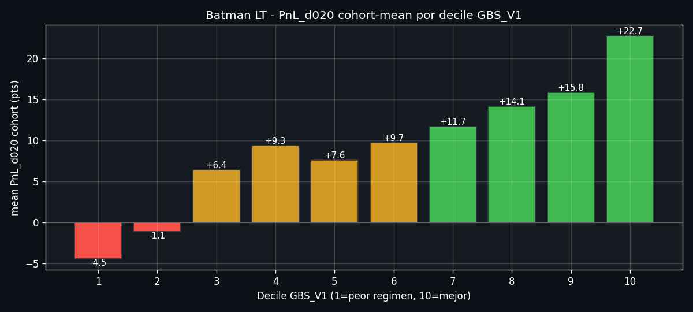
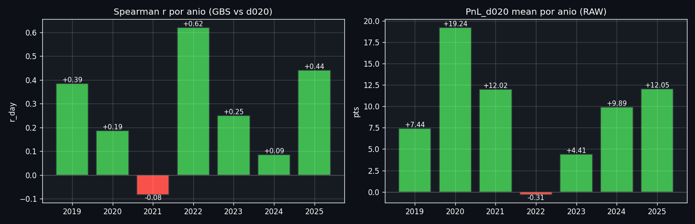
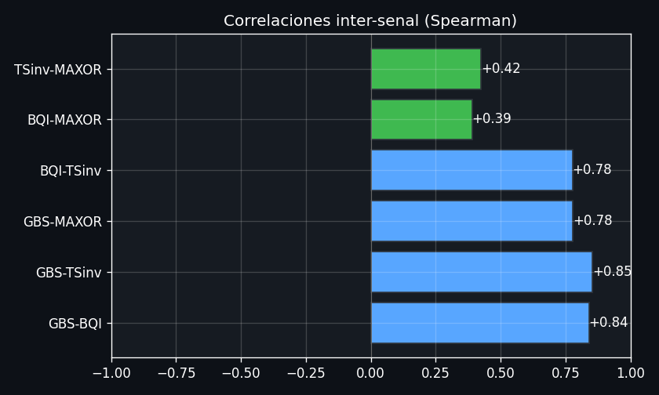

ESTRATEGIAS/GATE_BATMAN_SCORE_V1_Formula_(Batman).md
GBS_V1 = 0.333 · BQI_pctE + 0.333 · (1 − TS_M3_pctE) + 0.334 · MAX(TEN_pctE, PUT_pctE)
Como se comporta la cohorte Batman LT cuando filtramos por GBS_V1 percentile cutoff. El RAW es el universo completo (1614 dias).
El decile 1 (peor regimen) pierde -4.5 pts/dia en mean; el decile 10 (mejor regimen) gana +22.7 pts/dia. Spread +27 pts.

Spearman r y mean d020 por ano. 2021 roto (r=-0.08) -- mercado tranquilo post-COVID donde el regimen alto fue falsa alarma. Resto positivos.

Comparable: misma estructura cohort cuts, pero la senal usada es cada pata individual (BQI / 1-TS / MAXOR). El composite GBS gana en monotonia y robustez vs cada pata sola.
BQI_pctE (pata 1):
(1 − TS_M3_pctE) (pata 2):
MAX(TEN, PUT) (pata 3):
Spearman entre las 3 patas + composite. Correlaciones moderadas confirman ortogonalidad.
